4. 虚谷号系统升级¶
虚谷号系统升级（烧写固件）分为Loader和MaskRom两种模式。强烈推荐用户使用Loader模式烧写固件。MaskRom模式是设备崩溃的最后一条防线，具有一定风险。因此仅在设备进入不了Loader模式的情况下，方可尝试MaskRom模式。
固件下载地址：http://www.vvboard.com.cn/plus/view.php?aid=6


 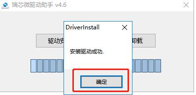
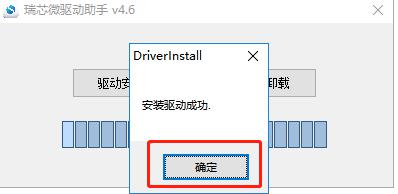
4.2. 步骤详解¶
1.打开烧写程序
打开AndroidToolAndroidTool_Release目录下的AndroidTool.exe

打开后如下所示：

2.进入Loader模式
1）断开虚谷号的所有电源。
2）按住虚谷号的RST按键，通过 OTG 口将虚谷号和电脑连接。

3）当电脑显示“发现一个LOADER设备”时，松开按键。这时设备就进入 Loader 模式，OTG口旁边的LED将亮起。
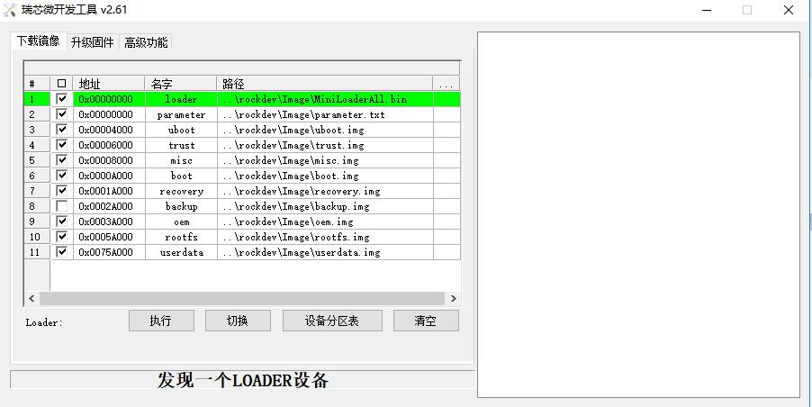4）选择img文件，烧写固件。
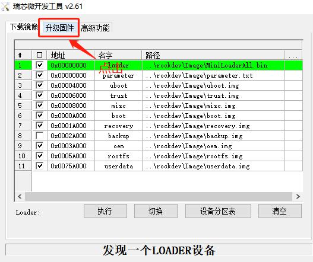
 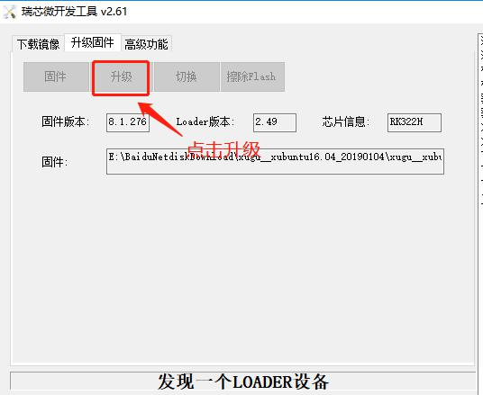
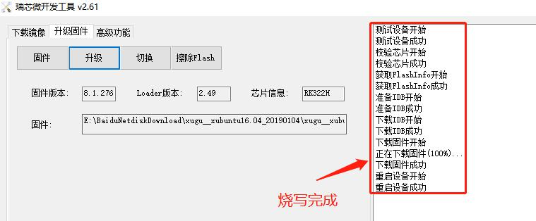
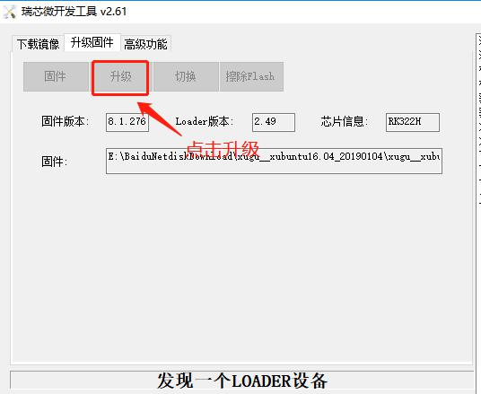
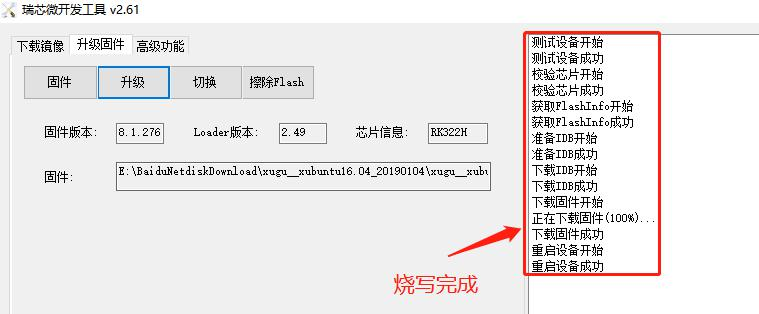
6）重启虚谷号
固件烧写成功后，虚谷号将重新启动，这时候要**稍等数分钟**，等待系统更新完毕。等到vvBoard盘符出现后，系统升级成功！
- 注意：
-固件烧写成功后，虚谷号将重新启动，还要稍等数分钟才能正常使用。 -部分板子（概率很小）可能需要完全断电，静置数分钟才能正常使用。
4.3. 固件升级失败原因及解决方法¶
固件升级失败一般分为两种情况。
1.没有找到设备。
按住RST键接入电脑，固件升级工具中依然提示“没有找到设备”。这种情况一般是驱动没有安装引起，请重新安装驱动。
如果驱动安装后，依然提示“没有找到设备”，请打开“设备管理器”查看电脑的设备中，是否出现一个名为“Class for rockusb devices”的设备。如果设备上有感叹号，说明驱动没有正确安装，请重新安装。
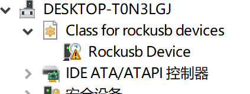2.能找到设备但固件升级失败，如下图所示。

失败的原因及为以下几种：
升级过程中碰到USB连接线，导致接触不良。
使用笔记本电脑（旧版本）给板子供电，导致供电不足。
1+8（创客版）的板子升级2+32（教育版）的固件。
注意：如果提示设备测试失败，或者升级后不能进入U盘模式，都可以参考下面的办法！！！
解决方法：
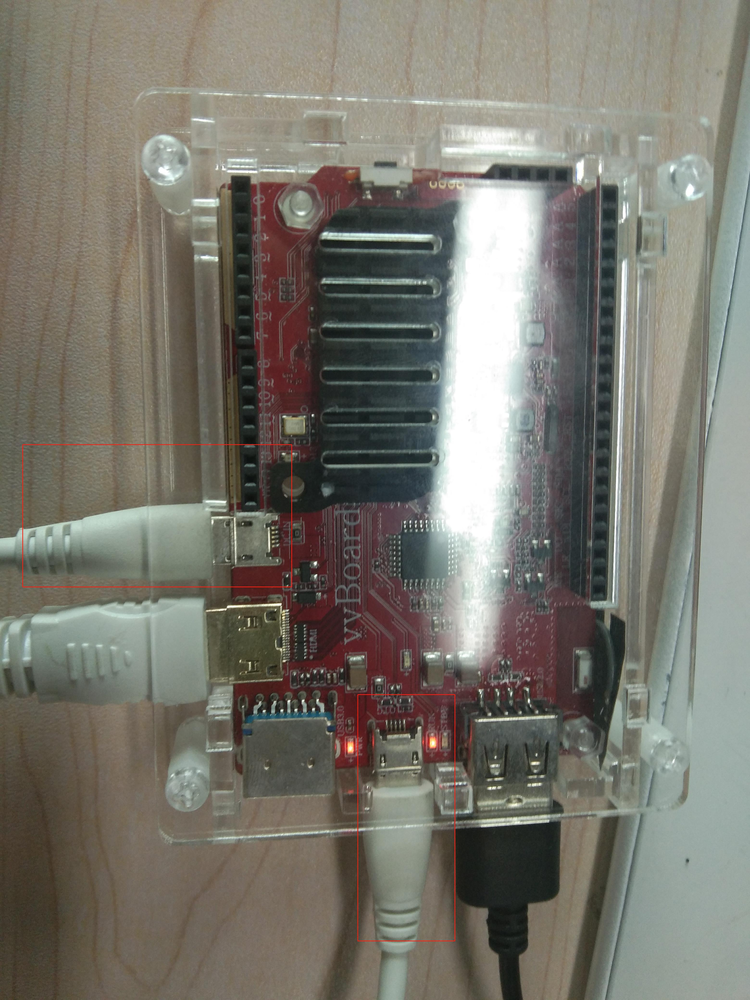
供电不足：当虚谷号进入loader模式后，在电源口（DC IN）再连接一根电源线（最好采用2A的充电器供电）。
烧错固件：更改为正确的固件进行烧录（注：2+32（教育板）的板子可以烧录1+8的固件。
重新拔插USB口，尝试再次烧写。
4.4. MaskRom模式详解¶
如果loader模式失败，动手能力强的用户可以试一下MaskRom模式。打开烧写程序后，还要做如下工作。
1.在虚谷板上找到对应的两点，如下图红框内所示：
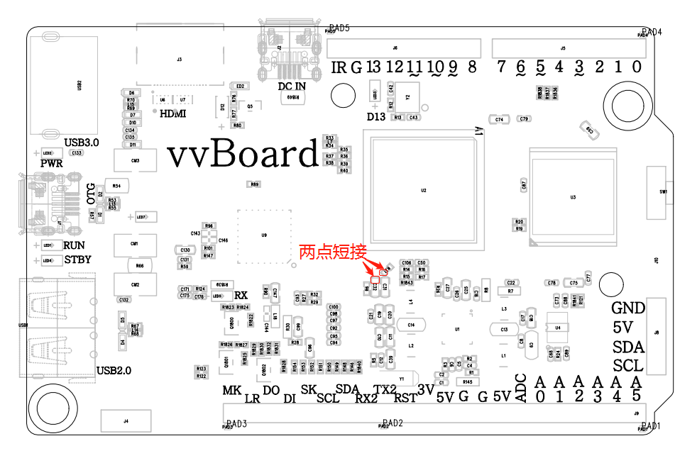2.设备断开所有电源。
3.用金属镊子接通图片的两点，并保持。
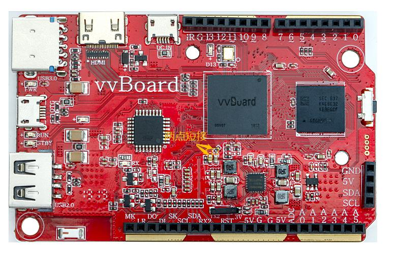4.用Micro USB OTG线连接好设备和主机。
5.显示发现一个MaskRom设备时，松开镊子设备就进入MaskRom模式，进行烧写。